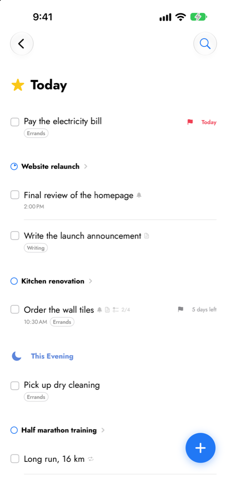
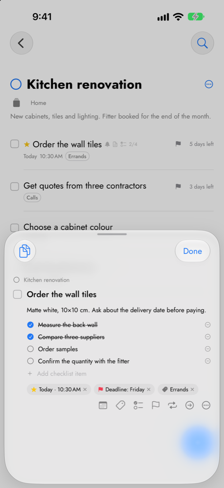
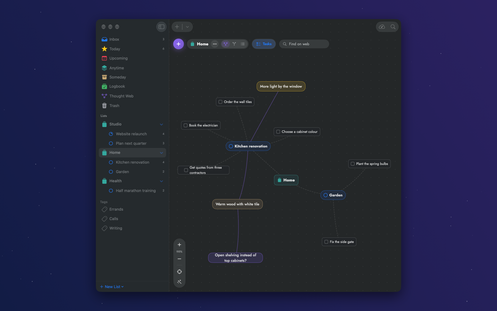

Projects, Jobs and Tasks
A Project holds Jobs, and a Job holds the Tasks that get it done.
Today and Upcoming
Dates, deadlines, reminders and repeats, with your calendar alongside.
Thought webs
Map ideas, link them to your work, and turn them into tasks when they're ready.
Yours alone
No account, no tracking. Sync goes through a folder in your own iCloud Drive.


